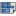

|
| Ubicación en el Menú |
|---|
| Arch → Panel tools → Nest |
| Entornos de trabajo |
| Arch |
| Atajo de teclado por defecto |
| None |
| Ver también |
| None |
Contents |
Descripción
La herramienta Nido permite seleccionar una forma plana para ser un contenedor y una serie de otras formas planas para organizarlas dentro del espacio definido por la forma del contenedor. Esto es típicamente necesario para las operaciones CNC, donde se desea cortar una serie de piezas de un panel base, y necesita organizar esas piezas de la mejor forma compacta posible para que ocupen menos espacio en el panel.
El algoritmo detrás de la herramienta Nido está en constante evolución y actualmente no está totalmente optimizado. En el futuro, el rendimiento de esta herramienta debería ser mucho mejor.
{kind=link}
La imagen de arriba muestra una serie de formas antes y después de la operación de anidación
Utilización
{kind=link}
- Presiona el botón  Arch Nest
- Seleccione un objeto para ser el contenedor. Este objeto debe ser plano, y, de momento, rectangular
- Haz clic en el botón "Elegir contenedor" para usar ese objeto como contenedor
- Seleccione una serie de otros objetos planos que desee colocar dentro del contenedor. Todos estos objetos deben ser planos y en el mismo plano que el contenedor.
- Ajuste las opciones deseadas a continuación
- Inicie el proceso de cálculo
- Al final del cálculo, haga clic en el botón Vista previa para crear una vista previa temporal del resultado.
- Si desea aplicar el resultado (mueva y gire las formas reales en su lugar), haga clic en Aceptar.
{kind=link}
Notas
- Todos los objetos deben tener una cara
- Por el momento, la herramienta solo funcionará con objetos planos que tengan la misma orientación.
- Por el momento, el contenedor debe ser rectangular.
- En este momento, el margen/espacio entre las piezas aún no está implementado
- El cálculo puede tomar mucho tiempo con muchos objetos. Eso se optimizará en el futuro